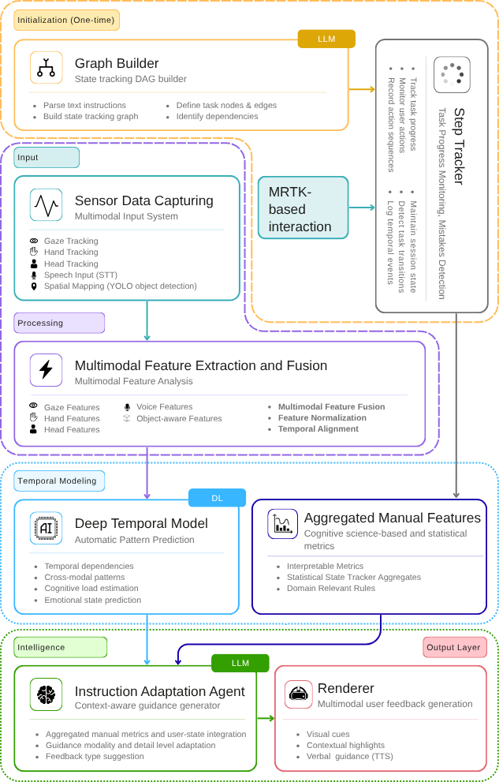

Department of Information Convergence Engineering, Pusan National University
Mixed reality (MR) guidance systems predominantly rely on static instructions, failing to account for the cognitive and behavioral variability of real-world learners. This thesis presents a multimodal adaptive guidance system for extended reality, designed for procedural laboratory training on the Microsoft HoloLens 2 platform.
The proposed system integrates structured task representation, real-time semantic step tracking, multimodal user state estimation, and LLM-based adaptive guidance into a unified closed-loop architecture. Task progress is modeled as a directed acyclic graph (DAG) generated from natural-language protocols using a large language model, enabling automatic and flexible task structuring, and is tracked in real time through a multimodal action recognition pipeline leveraging sensor data derived from gaze, hand, and head interactions. These multimodal signals are used to estimate the user's cognitive load and affective state, enabling the guidance module to dynamically adapt feedback in terms of granularity, tone, and content.
Evaluation of the guidance generation component shows that incorporating real-time user state signals alongside task context improves response relevance and reduces hallucination compared to context-only baselines.
Experimental results demonstrate robust step tracking performance and low-latency system responsiveness, supporting real-time deployment in immersive laboratory settings.
Overall, this work establishes a practical framework for user state-aware adaptive MR guidance, advancing beyond one-size-fits-all instruction toward personalized learning support.
Extended Reality, Large Language Models, Adaptive Learning, Multimodal Data, User State Estimation, AI-Driven Personalization

Fig. 1 — Multimodal adaptive guidance framework overview
| Category | Metric | Result |
|---|---|---|
| Object/action pipeline | Step completion accuracy | — |
| Action recognition | F1 | — |
| Outcome classification | F1 | — |
| Runtime | Action-classification latency | — |
Presented as a poster at IEEE VR 2026 Conference
The full Unity project and complete testing dataset are not publicly uploaded due to file size, dependency complexity, and participant privacy considerations. Instead, selected source code, representative configuration files, anonymized sample logs, and aggregated evaluation results are provided.